Differentiating Cancer Cells
Introducation to the problem
The gaming industry has been growing rapidly in recent years. With this growth, its impact on society has also increased. Hence, looking at the trends from the dataset of what games hit the highest viewership throughout the years may help us see what type of content people are watching. For instance, we may notice more multiplier games during the colder months, when desire for human contact increases. The trends also have a more guaranteed use case. Game developers can use trends that may appear to influence the genres of games we make and the content within them. Looking at what games lost streamers or viewers quickly, like within months, may show genres that are harder to make games for.
Introducation to the data
The dataset we will use was downloaded from Kaggle.com, which I got from datasetsearch.research.google.com.
The dataset was created by RAN.KIRSH, and data was collected from sullygnome.com, which tracks this data.
The data for the top 200 games on Twitch every month from January 2016 to March 2023. Data that is collected
for the database is ranked at the time of collection, name, month and year of data collection, hours
watched, hours streamed, peak viewers, peak channels, streamers, average viewers, average channels, and
average viewer to channel ratio. The dataset currently includes all sections of Twitch, not just gaming.
Sections included are: just chatting, art, food and drinks, etc.
Pre-processing
(Code File)Starting the processing of the dataset by loading it as a Pandas dataframe. 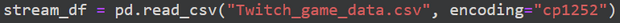 The read_csv method call required the encoding as cp1252 because certain game names include characters in a format not supported by default, utf-8. 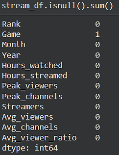 Checking the data for null to check if the set needs to be cleaned. 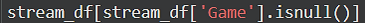 There is one null value in the Game column, which we print to check if it's going to be an issue. 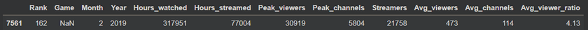 Looking at the original data on sullygnome, it likely appeared due to some bug on Twitch itself, as it is a null name that only appears during this one month. Since it's the 162nd highest of the month and only appears for 1 month, it shouldn't interfere with the question as it will get removed later anyway. 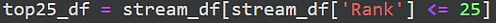 Since the first questions are specifically about the most viewed games, we create a new data frame with only the top 25 games of each month. This removes games that may be consistent in viewership but are always ranked low. 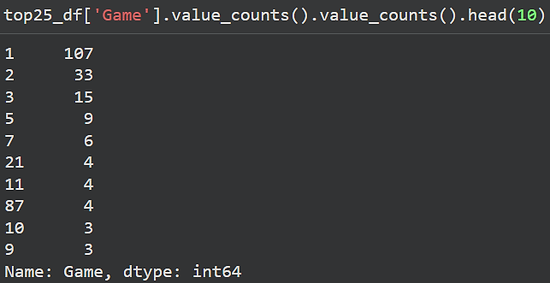 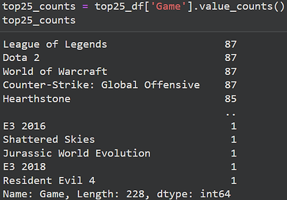 In the top 25 list now, all the games have reached the top 25 in the collection period. But now is the split point where we separate the data between the two main questions. Looking at how many months different games were in the stop 25, we notice a large percent of games fall within 3 months. Let's split those into two new dataframes. 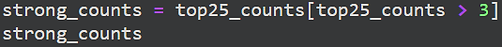 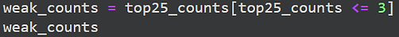 Now we have the two series games, one for games that stayed popular for many months and another for games that were recorded in the top 25 for less than 3 months in the collection period. 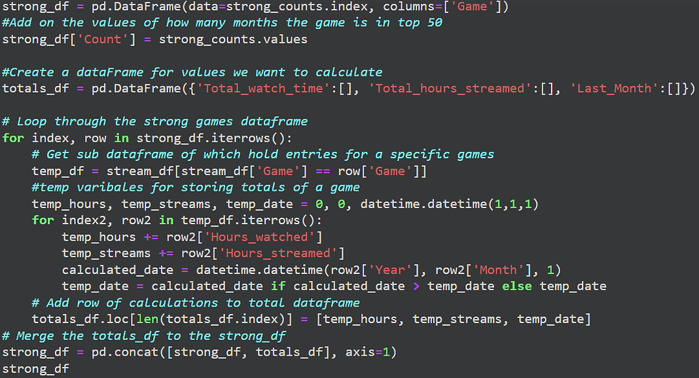 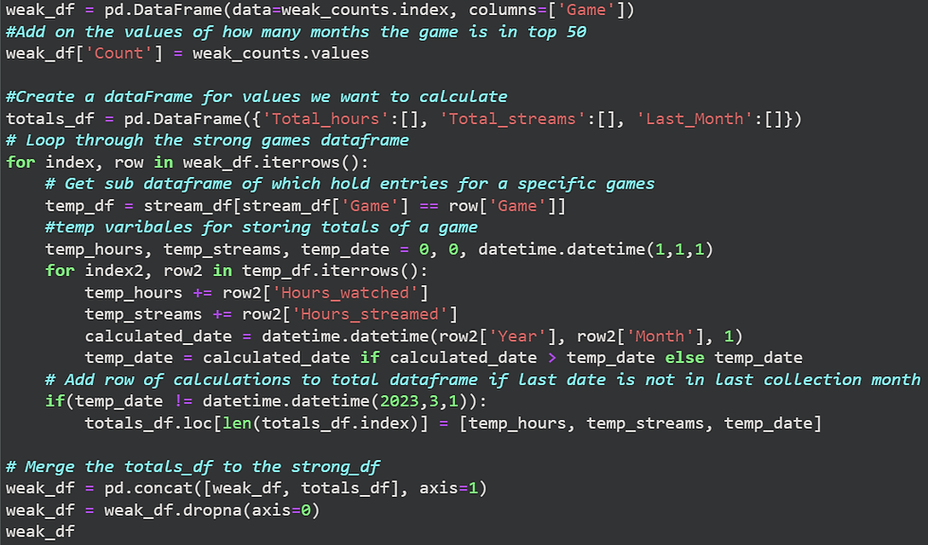 The above two sections of code calculate totals for each game, which we wish to use to answer our questions. In the weak_df section, you may notice extra code to not record data for the last dates as March 2023 and then drop the NA values. This was done to prevent games that were just released and may have just started getting traction from being counted as weak games. If a popular game was released later in the collection period, it is obvious it would only be at the top for a few months.
Visualization
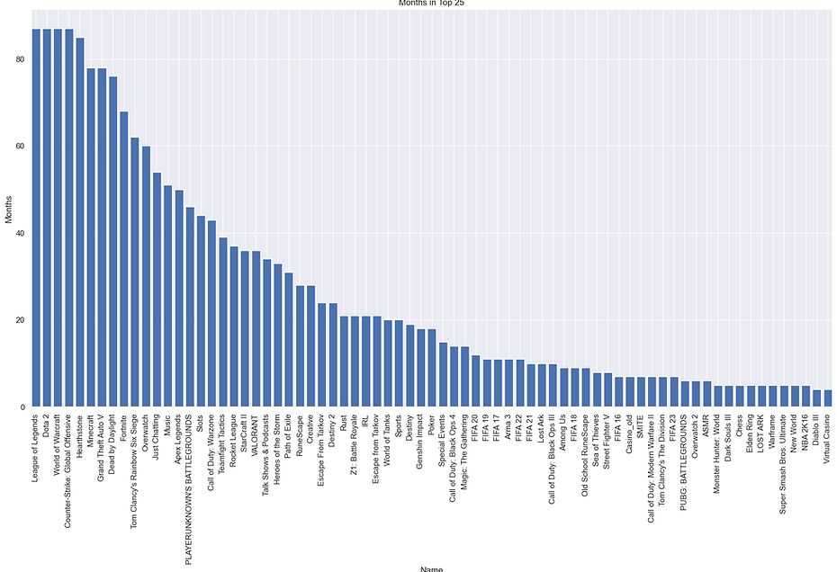
Looking at the top games by number of months in the top 25 rank, we can see that most streamed games are
multiplayer games. Many of these are not only multiplayer but also voice-based co-op games, which involve an
element of comedy and chaos. Watching live content is more restrictive and requires more focus than watching
recorded content because you can't rewind or pause and watch later. As such, content likely has to be more
engaging to keep a viewer interested, and the less planned nature of multiplayer games fits this idea.
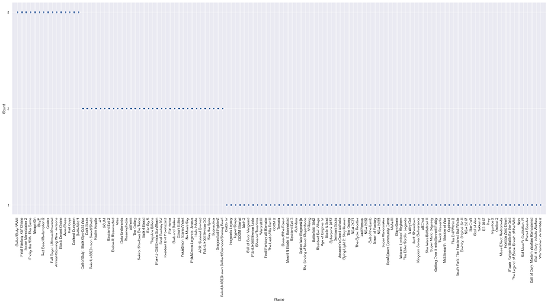
Looking at games that reached the top 25 only a few months before falling off, we still see a lot of
multiplayer games, but now we start seeing more single-player games. Games like the Pokemon games start to
appear only after a month or two. This suggests that not only single-player games but games that tend to
have a similar structure between individual gameplay styles struggle in the live streaming content space.
 The graph above shows the relationship between streamed hours of content and total hours watched. There is a
slight corrallation, but the amount of uncertainty suggests that the number of people and how long they
stream don't seem to correlate well with whether the public enjoys watching the content.
The graph above shows the relationship between streamed hours of content and total hours watched. There is a
slight corrallation, but the amount of uncertainty suggests that the number of people and how long they
stream don't seem to correlate well with whether the public enjoys watching the content.
Storytelling
The data from Twitch suggests that the live streaming content space is dominated by multiplayer games. Games
that include team multiplayer dominate even more than other multiplayer games.
While this doesn't mean only multiplayer games see success, it does mean multiplayer games are just more
likely to see success in the live streaming space. But success in the live streaming space for a long period
of time likely diffuses into recorded content and the overall success of the game. For instance, people who
watch live content are likely to also watch similar recorded content, though this is all speculation and
would require more data and analysis on its factuality.
Single-player games struggle in live streaming, but we have all seen them succeed in recorded content space.
So it seems single-player games rely more on recorded content than live streaming
Impact
So depending on the type of game a developer has and/or the content space they wish to enter, it requires
different strategies. For instance, in the streaming space, based on the analysis, it seems that just
sponsoring many streamers to play your game doesn't seem to be a good idea as it doesn't correlate with
watch time.
If a game developer built a single-player game, focusing their efforts in this recorded content space would
result in greater success. Since we have seen them succeed, if it's not through streamed content, recorded
content has to be it.
References
My Dataset:
https://www.kaggle.com/datasets/rankirsh/evolution-of-top-games-on-twitch
https://sullygnome.com
Debugging:
https://stackoverflow.com/questions/45529507/unicodedecodeerror-utf-8-codec-cant-decode-byte-0x96-in-position-35-invalid
https://sparkbyexamples.com/pandas/pandas-count-frequency-value-occurs-in-dataframe-column/
https://stackoverflow.com/questions/16476924/how-to-iterate-over-rows-in-a-dataframe-in-pandas
https://pandas.pydata.org/docs/reference/api/pandas.DataFrame.html
https://pandas.pydata.org/docs/reference/api/pandas.concat.html
https://stackoverflow.com/questions/42045767/how-can-i-change-the-x-axis-so-there-is-no-white-space/